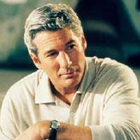

О нас
Немного о питании
ПОЛЕЗНО ЛИ ВЕГЕТАРИАНСТВО?
На сегодня растительная пища признается не только полноценным питанием, но и способом профилактики и уменьшения риска появления многих болезней. Исследования показывают, что вегетарианцы имеют более низкие риски возникновения сердечно-сосудистых заболеваний, избыточного веса и ожирения, некоторых видов рака.
Чтобы быть полезной, растительная диета должна быть продуманной. Ведь она не означает простой отказ от мяса и продуктов животного происхождения. Только здоровый растительный рацион (овощи, фрукты, семена), а также полноценная замена животного белка растительным (бобовые, соевые продукты, орехи) способствуют уменьшению риска появления многих заболеваний. Если же вы не употребляете мяса и компенсируете это малопитательной едой, ожидать какие-то полезные эффекты для здоровья тщетно.
Если хотите начать такую диету – подходите к этому разумно. Постепенно убирайте мясо или другие продукты животного происхождения из своего рациона. К тому же стоит заранее понять, каким образом вы будете планировать свой обновленный рацион, чтобы получать достаточно питательных веществ.

{kind=link}
{kind=link}
Отзывы
Знаменитые люди о вегетарианстве
«Наша обязанность, как опекунов планеты, относится ко всем созданиям с добротой, любовью и состраданием. То, что животные страдают от жестокости человека — выходит за рамки понимания. Помогите остановить это безумие.»
Ричард Гир
Спросить, сложно ли придерживаться вегетарианства — это как спросить, сложно ли не есть людей. Не сложно. Сложно — их есть.
Павел Дуров
«Наша обязанность, как опекунов планеты, относится ко всем созданиям с добротой, любовью и состраданием. То, что животные страдают от жестокости человека — выходит за рамки понимания. Помогите остановить это безумие.»
Ричард Гир
Спросить, сложно ли придерживаться вегетарианства — это как спросить, сложно ли не есть людей. Не сложно. Сложно — их есть.
Павел Дуров
«Наша обязанность, как опекунов планеты, относится ко всем созданиям с добротой, любовью и состраданием. То, что животные страдают от жестокости человека — выходит за рамки понимания. Помогите остановить это безумие.»
Ричард Гир
Спросить, сложно ли придерживаться вегетарианства — это как спросить, сложно ли не есть людей. Не сложно. Сложно — их есть.
Павел Дуров